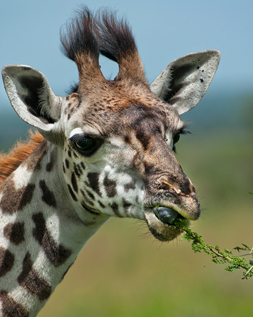
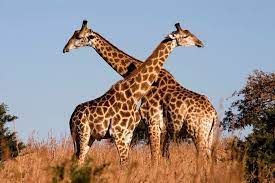

La jirafa es el animal terrestre más alto del mundo y uno de los protagonistas indiscutibles de la sabana africana.

Además de su altura, otro de los aspectos más llamativos de las jirafas son sus manchas oscuras, negras o marrones y dentadas o redondeadas, que contrastan con su pelaje amarillento.

La jirafa habita exclusivamente en África, en las zonas de sabana, pastizales y bosques abiertos.